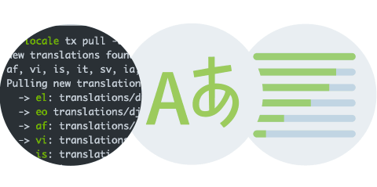

For the most up-to-date information, please refer to Transifex.com and support.transifex.com.
Transifex Community Edition Help Pages¶
Transifex is a modern localization platform. It’s a web system which automates the translation workflow for complex international projects.
On Transifex.com you can find a software-as-a-service version which is offered for free for open-source projects. The canonical place for documentation on the product can be found at support.transifex.com.
These pages document older versions of the Community Edition of Transifex. Its repository can be found on GitHub.

Table of Contents¶
- Introduction
- The basic concepts of internationalization and the workflow used by Transifex to manage translations.
- The Transifex Server
- How to install and configure the Transifex open-source Server on your own infrastructure.
- The Transifex Client
- Our command-line app to sync files between a workstation or server and Transifex.
Next Section: Table of Contents »